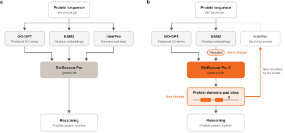
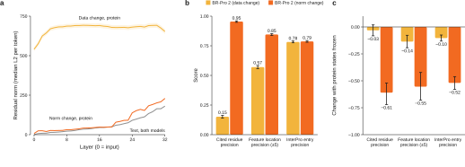

BioReason-Pro 2 — 让生物推理真正使用蛋白输入

输入链路与模型
蛋白序列/可选结构由冻结ESM3 open small第37层表示；经protein projector与GO图编码/投影接入Qwen3.5-9B。文本侧包括物种、GO-GPT预测、可选InterPro和交互伙伴。蛋白截断到2000残基，文本窗16384、最多8000输出token。推理建议单80GBGPU；vLLM内存配额外还要计ESM3和GO编码器。权重OpenMDW1.1、代码MIT，依赖许可分别保留。
推理用GO-GPT ep75以匹配训练/评测，后来的ep89不能无说明替换。在线InterPro版本会变，只有本地5.78-109.0匹配原训练。结构与序列不匹配时回退序列。训练80%样本屏蔽partners、50%屏蔽结构，故缺这些字段在训练分布内；这不等于所有缺输入都无性能代价。
如何从解释性发现改造训练
旧BR-Pro能从InterPro文字直接恢复大量功能结论，移除ESM3影响很小。新版先去掉训练输入中的InterPro，把识别域/位点变为模型必须完成的任务；KimiK3目标轨迹增加具体区域和残基位置。然后发现蛋白表示幅度远高于文本，层更新相对过小。逐残基LayerNorm虽缩小尺度却抹掉幅度差异，出现长度错误与越界位置；block RMSNorm给整个蛋白用同一个缩放因子，保留残基间相对幅度。示意为 \(\tilde H=cH/\mathrm{RMS}(H)\)，准确实现与norm_target以归档源码/配置为准。
| 博客消融量尺 | data change | norm change | 不应混淆 |
|---|---|---|---|
| 引用残基身份/位置正确率 | 15.1% | 95.5% | 不是GO Fmax |
| 特征位置在真值±5残基内 | 57.0% | 84.5% | 不是全部特征召回 |
| 移除IPR后→更细训练的特征召回 | 44%→83% | 最终约84% | 不同阶段与量尺分开 |
博客data-change说over230K轨迹，当前发布README说272688；分别归因，不伪造同一数据revision。冻结各层蛋白位置状态、屏蔽/置换/打乱ESM3、重放固定前缀等干预表明新版更依赖蛋白信息；这能证明输入影响，不能证明每一条功能结论正确。SAE共享激活只能提供关联特征，不能自动升格成因果机制。
SFT与GRPO实际配置
| 阶段 | 配置 |
|---|---|
| SFT数据 | 272688蛋白记录/轨迹；约2%验证；另6112测试；1321质量不合格训练蛋白排除 |
| SFT1 | 冻结LLM，仅protein/GO projectors及GO encoder，1epoch |
| SFT2 | 全linear层LoRA r128/α256，10epochs；实际发布epoch07 |
| SFT优化 | lr1e-4，5%warmup+cosine，有效batch32；4×8H100 |
| RL | 2905个SFT验证蛋白，1epoch90steps；32prompts×16rollouts，LoRA r64/α128 |
| RL优化 | lr2e-5、KL0.001；半数提示带InterPro；1×8H100；SkyRL带项目patch |
| reward | KimiK3 low按五轴评分，再乘长度因子；不是GO标签直接reward |
| 独立测试裁判 | Nemotron3.5SuperVL max，1000蛋白固定子集 |
RL说明进一步限定只有LLM的新LoRA与protein projector训练，ESM3用预缓存、GO block烘入embedding表。生成预算4096token；裁判temperature0，长度因子13000字符前全额、16000字符处为0，无可解析GO term直接0。原1442/2905条带InterPro，两个超长样本保留无特征提示以免被静默丢弃。
当前README训练esm3.4.0，但已发checkpoint用了3.2.1.post1；有结构时embedding均值cos0.9989、最低残基0.93，不能声称完全相同。公开eval修复了444个无结构蛋白被批处理为零backbone的问题，重新生成使GO/残基/InterPro/span量尺最多变化0.002。复测必须冻结依赖、GO-GPT版本、结构分支、测试蛋白集合和judge。
结果与生物验证分别读
| 6112测试 / 1000裁判子集 | SFT 无/有IPR | RL 无/有IPR |
|---|---|---|
| 五轴judge均分 | 7.24 / 7.72 | 7.74 / 8.43 |
| 可靠性 | 3.92 / 5.06 | 5.34 / 6.97 |
| GO Fmax | 0.629 / 0.640 | 0.662 / 0.667 |
| IA加权Fmax | 0.551 / 0.566 | 0.590 / 0.597 |
| 残基正确率 | 0.955 / 0.957 | 0.976 / 0.977 |
| InterPro precision | 0.787 / 0.945 | 0.853 / 0.984 |
| feature presence F1 | 0.857 / 0.890 | 0.856 / 0.896 |
| span±5 | 0.845 / 0.871 | 0.886 / 0.917 |
无IPR的feature presence F1从0.857微降0.856，不能写全指标提升。GO预测包含confident和speculated、向祖先传播，每term分数1，所谓Fmax只有一个阈值；不是常见连续置信度扫阈值的解释。博客best-of10 6.8→8.4与RL单样本6.8→7.6属于另一组实验，不与发布表7.24→7.74硬接。
SMIM32每条件300次：原蛋白31%提出Cys75 S-acylation；去蛋白或C75S突变均0/300；移动Cys到78降13%，到20为2.7%。零次不代表概率严格为0。固定前缀中直接提供Cys75文字，即使突变仍可诱发63.7%提出，说明文本可覆盖真实证据。湿实验支持测试条件下Cys75依赖的S-acylation，但脂肪酸、酶及尾部效应仍未定，原CoT含错误家族和不合理信号肽判断。RCDG1与RAB5A由co-IP支持关联，不等于证明直接结合机制；RCDG1在训练蛋白中，但训练轨迹未提该伙伴，不能叫完全未见蛋白泛化。
对Agent Training的启发
当前模型对其他回答格式的请求较弱，原始轨迹和完整run缺口仍在。未独立执行模型或湿实验；不得将这份笔记用作生物学或医疗验证结论。
官方来源与关联资料
📊 中文Poster：中文Poster
官方原图与机制对照

